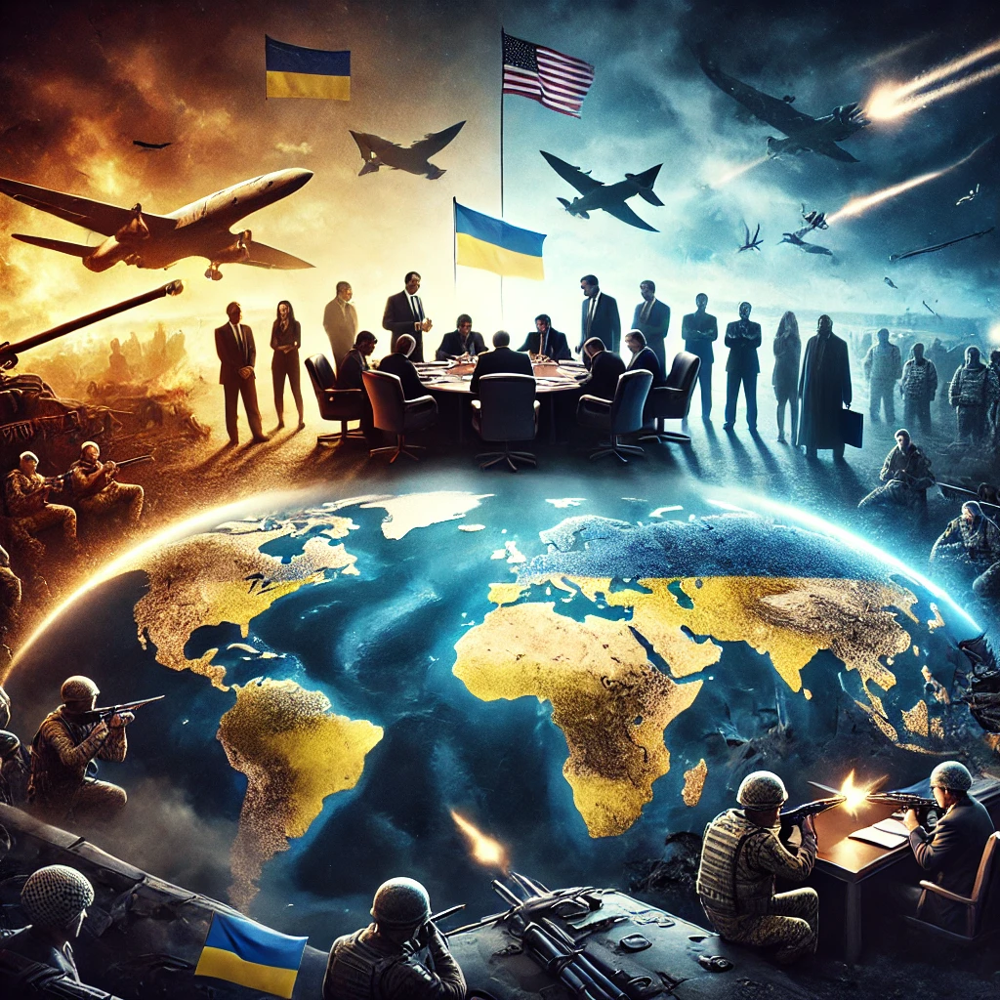

A Situação Atual da Ucrânia Entre os Acordos de Trump e Putin: Uma Nação à Beira do Colapso?
Publicado em 2025-03-16 20:29:32

Nos últimos meses, a guerra na Ucrânia sofreu mudanças drásticas, com os Estados Unidos e a Rússia envolvidos em negociações diretas que podem definir o futuro do conflito. Com Donald Trump novamente na presidência dos EUA desde janeiro de 2025, a abordagem americana mudou significativamente, levando a um possível acordo com Vladimir Putin que pode forçar a Ucrânia a ceder territórios em troca de um cessar-fogo.
Estas movimentações estão a gerar grande tensão na Europa e no próprio governo ucraniano, que enfrenta pressões externas para aceitar um acordo que pode ser visto como uma vitória para Moscovo. Este artigo analisa os últimos desenvolvimentos da guerra, os impactos das negociações e o que podemos esperar para o futuro da Ucrânia.
1. O Cessar-Fogo Proposto por Trump e a Resistência de Putin
Desde que assumiu a presidência dos EUA em janeiro de 2025, Donald Trump tem adotado uma postura mais conciliatória com a Rússia, alegando que o apoio militar à Ucrânia é um desperdício de recursos americanos.
1.1 A Proposta de Trump: Um Cessar-Fogo de 30 Dias
O governo dos EUA propôs um cessar-fogo temporário de 30 dias, com a condição de que a Ucrânia aceitasse negociações diretas com Moscovo.
O presidente ucraniano Volodymyr Zelensky aceitou a proposta, temendo que o corte de apoio militar ocidental enfraqueça ainda mais a sua posição.
Putin, no entanto, rejeitou o acordo, chamando-o de uma “manobra ocidental” para dar tempo às forças ucranianas de se reorganizarem.
1.2 O Objetivo da Rússia: Um Acordo de Longo Prazo
A Rússia está a pressionar por um acordo definitivo, no qual a Ucrânia reconheça oficialmente a anexação de Donetsk, Luhansk, Zaporíjia e Kherson, além da Crimeia.
Moscovo quer também um compromisso de neutralidade por parte da Ucrânia, impedindo sua adesão à NATO no futuro.
Putin sabe que Trump não está disposto a entrar em conflito direto com a Rússia, o que lhe dá margem para endurecer as condições do acordo.
Com as negociações a avançar lentamente, a situação no campo de batalha continua volátil e extremamente perigosa para Kiev.
2. O Impacto da Mudança de Posição dos EUA na Guerra
A nova posição dos EUA sob Trump enfraqueceu significativamente o moral das tropas ucranianas e da liderança política em Kiev.
2.1 Menos Armas, Menos Defesa
Desde janeiro de 2025, os envios de armamento dos EUA para a Ucrânia foram reduzidos em 60%, enfraquecendo a capacidade do exército ucraniano de resistir às investidas russas.
A Europa tenta compensar a falta de apoio americano, mas não tem os mesmos recursos que os EUA, o que tem atrasado o fornecimento de munições e tanques.
2.2 Avanços Russos no Leste e Sul da Ucrânia
A Rússia intensificou os ataques com drones e mísseis nas regiões de Kharkiv e Donbass, causando milhares de baixas nas forças ucranianas.
Mariupol e Kherson estão sob crescente controle russo, com forças ucranianas a serem forçadas a recuar em várias frentes.
2.3 Ucrânia Isolada: A Hesitação da NATO e da UE
A União Europeia aprovou um pacote de 800 mil milhões de euros para reforçar a defesa do continente, mas a ajuda tem sido lenta a chegar à Ucrânia.
A NATO, sem o forte apoio dos EUA, tem demonstrado hesitação em intervir diretamente.
Zelensky apela desesperadamente por mais apoio, mas a posição de Trump enfraquece os aliados europeus, que temem um confronto direto com a Rússia.
Enquanto isso, os encontros entre Trump e Putin continuam, e há indícios de que os dois líderes estão a chegar a um entendimento que pode deixar a Ucrânia numa posição extremamente vulnerável.
3. As Negociações Secretas entre Trump e Putin: O Que Está em Jogo?
3.1 Acordos de Bastidores e Concessões Perigosas
Recentes reuniões diplomáticas entre Washington e Moscovo sugerem que Trump está disposto a ceder mais do que o esperado para acabar com o conflito.
Putin exige o levantamento parcial de sanções sobre setores estratégicos da economia russa.
Trump pode aceitar retirar apoio militar à Ucrânia de forma definitiva, em troca de um cessar-fogo prolongado.
Há relatos de que os EUA propuseram à Ucrânia permitir que empresas americanas explorem recursos minerais em território ucraniano, como contrapartida para continuar a receber ajuda financeira.
Estas negociações estão a deixar a Europa e a NATO extremamente preocupadas, pois qualquer acordo que beneficie Putin pode fortalecer a posição da Rússia e tornar a Ucrânia uma zona de influência permanente de Moscovo.
4. O Futuro da Ucrânia: Resistência ou Capitulação?
Com um exército cada vez mais fragilizado e menos apoio externo, a Ucrânia enfrenta um dilema existencial.
4.1 Zelensky Aceitará as Condições de Putin?
Se Zelensky for forçado a aceitar os termos russos, a Ucrânia perderá grande parte do seu território e da sua soberania.
A resistência interna na Ucrânia pode crescer, levando a uma guerra de guerrilha contra os ocupantes russos.
4.2 O Risco de um Conflito Congelado
Se nenhum acordo for fechado, a guerra pode entrar num impasse prolongado, semelhante ao que ocorreu na Coreia no século XX.
Isso significaria uma Ucrânia dividida, com parte do país sob controle russo e outra parte apoiada pelo Ocidente, mas sem perspectivas de paz a curto prazo.
4.3 A Europa Está Disposta a Assumir o Papel dos EUA?
Se Trump continuar a recuar no apoio militar à Ucrânia, a Europa terá de decidir se assume esse papel.
França e Alemanha estão a tentar criar uma força de defesa europeia, mas isso pode demorar anos a tornar-se realidade.
Enquanto isso, a Rússia continua a consolidar o seu domínio sobre as regiões ocupadas.
5. Conclusão: A Ucrânia Está Sozinha?
A guerra na Ucrânia entrou numa fase crítica, com a Rússia a ganhar vantagem militar e diplomática, enquanto o apoio ocidental diminui.
Se Trump e Putin fecharem um acordo, a Ucrânia pode ser forçada a aceitar uma derrota parcial, perdendo territórios e autonomia política.
A grande questão agora é: a Europa e a NATO vão permitir que a Rússia ganhe esta guerra?
Se o Ocidente não reagir, Putin sairá fortalecido e poderá ambicionar novas conquistas, colocando em risco toda a segurança europeia.